章节 Boss《没人相信的怪物》掉落Ⅴ · 这一身
入学通知书“上面印着他的名字，名字后面跟着一个号。”
选择变多了，但你不能不选：每章奖励三选一变四选一；代价：不能再跳过奖励，每次必须选走一件。
这一生不是怪物名单，而是一条走过的路
六章＋终局 · 按玩家真实遭遇顺序归档环境、普通怪、小 Boss、大 Boss、阶段、招式、隐喻字幕与情境语音。
第 01 章 · 童年
场景 → 3 种普通怪 → 小 Boss → 大 Boss → 沿途语音
简单，刷道具，把构筑起个头。这一章不设计难度，设计的是「让他先有点东西」。
床底下有东西 → 大人说那里什么都没有 → 他自己去确认
大 Boss《没人相信的怪物》的四招全部从半开的柜门缝里出来，其中《缝里看你》放出的窄光柱——光本身就是伤害带，不是特效。他确认过三次那是外套的袖子；第三次，里面好像也推了一下。
不是奖励，是路牌。玩家一拿到就知道下一站是学校——第五档「这一身」五件固定掉落，每一件都在告诉你下一章去哪。

他先踩上这一章的地面，再遇见会从日常里长出来的东西。
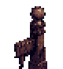
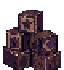
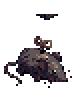
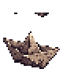

沿主角周围 84×58px 椭圆轨道绕飞，不直追、不接触扣血；每 2.4 秒预警 0.55 秒后撒出 62px 催泪鳞粉，造成 1 点伤害并迟滞 0.22 秒。
怎么应对 · 鳞粉预警出现就离开落点，不必追着它绕圈。


缓慢漂近，贴身造成 4 点伤害；每 2.8 秒吸气 0.72 秒，以 88px 脉冲追加 1 点并迟滞 0.26 秒。
怎么应对 · 听见吸气就拉开距离，别留在脉冲范围里。


每 3 秒锁定当时方向，预警 0.58 秒后以 245px/s 直扑 0.48 秒；轨迹半宽 18px，一扑至多命中一次，横移擦肩可躲。
怎么应对 · 等它锁定方向后横向走，别顺着扑击路线逃。


战场 · 童年 · 床底王国。熄灯后的卧室墙角——家里、柜子和床底的黑。挂着大人外套和帽子的木衣架立在那儿，空领口，无脸。
《里面有人吗》前摇 0.8 秒，锁定主角方向伸出 165px 袖影车道；半血前单袖半宽 26、命中 5 点并击退减速，半血后切换独立双袖动画、半宽 46、命中一次 6 点。袖击落点留下湿渍（《晾不干》），踩到减速；横移出红框、绕开湿渍即可躲开。
怎么应对 · 看红框横移，半血后双袖更宽；别踩袖击留下的湿渍。
设计背景
阶段与基础形态
唯一阶段 · 立在墙角的衣架


招式 · 2 式
 《里面有人吗（单袖）》 · 4 帧0.8 秒前摇后沿锁定方向伸出 165px、半宽 26 的袖影车道，命中 5 点、击退并减速，落点留下减速湿渍。“他知道那是衣架。可它今晚站得比昨天近。”
《里面有人吗（单袖）》 · 4 帧0.8 秒前摇后沿锁定方向伸出 165px、半宽 26 的袖影车道，命中 5 点、击退并减速，落点留下减速湿渍。“他知道那是衣架。可它今晚站得比昨天近。” 《里面有人吗（双袖）》 · 4 帧半血后切换独立双袖动画，危险带半宽扩为 46，仍只结算一次、命中 6 点，避免重叠判定造成隐性双伤。
《里面有人吗（双袖）》 · 4 帧半血后切换独立双袖动画，危险带半宽扩为 46，仍只结算一次、命中 6 点，避免重叠判定造成隐性双伤。隐喻字幕
“他确认过三次，那是外套的袖子。”

战场 · 童年 · 床底王国。柜门半开的卧室，缝里是纯黑和两只苍白的小眼睛。
四招按 3.8 秒间隔循环：《影子压来》直线压制、《里面还有手》十二向夹击、《门要关了》锁点挤压、《缝里看你》柜缝窄光柱。半血《衣柜裂开》转阶段并分裂出两只床下的呼吸，出招间隔压到 3.25 秒，但判定不变大。
怎么应对 · 每招都有明确前摇和缺口；半血先处理分裂出的两只小怪。
设计背景
阶段与基础形态
唯一阶段 · 没人相信的怪物


招式 · 4 式
 《影子压来》 · 4 帧前摇 0.85 秒，沿锁定方向压出 240px 长、半宽 34px 的影子，命中 6 点并击退；同一行动画也承担《缝里看你》——柜门缝放出 280px 窄光柱，光本身是伤害带。“他把柜门关了三次。第三次，里面好像也推了一下。”
《影子压来》 · 4 帧前摇 0.85 秒，沿锁定方向压出 240px 长、半宽 34px 的影子，命中 6 点并击退；同一行动画也承担《缝里看你》——柜门缝放出 280px 窄光柱，光本身是伤害带。“他把柜门关了三次。第三次，里面好像也推了一下。” 《衣柜裂开》 · 4 帧半血转阶段动作（非主动招式）：分裂出两只床下的呼吸，同时把三招间隔从 3.8 秒压到 3.25 秒。
《衣柜裂开》 · 4 帧半血转阶段动作（非主动招式）：分裂出两只床下的呼吸，同时把三招间隔从 3.8 秒压到 3.25 秒。 《里面还有手》 · 4 帧前摇 0.95 秒，锁定主角位置形成半径 132px 的十二向影手夹击；中心 30px 必定危险，只留背离衣柜方向 ±0.48rad 的扇形缺口，命中 5 点。
《里面还有手》 · 4 帧前摇 0.95 秒，锁定主角位置形成半径 132px 的十二向影手夹击；中心 30px 必定危险，只留背离衣柜方向 ±0.48rad 的扇形缺口，命中 5 点。 《门要关了》 · 4 帧前摇 0.8 秒，在锁定点合拢两扇半宽 42px、半高 96px 的影门，命中 6 点并横向推出；横移出狭长门缝即可躲开。
《门要关了》 · 4 帧前摇 0.8 秒，在锁定点合拢两扇半宽 42px、半高 96px 的影门，命中 6 点并横向推出；横移出狭长门缝即可躲开。隐喻字幕
“哪有什么怪物。快睡吧。”
遭遇语音
「哪有什么怪物。快睡吧。」
「人出生的时候，先哭一声。那是他来到世上，领到的第一口气。」
「有人出生时，门外站满了人；有人哭了很久，才有人推门。芸芸众生，来处不同。」
「后来大人教他争气，也教他忍气。」
「后来他们各自长大，也各自遇见，各自躲不过的事。」
「受了委屈，咽下去叫懂事；吐出来，又有人说他不懂事。每种选择，都有所得，也有所失。」
「有些气成了脾气，有些气撑成了骨气，还有一些，一直留在身体里。」
「得到的，穿在身上；失去的，也穿在身上。芸芸众生，各有各的这一身。」
「这一身并非生来如此，而是被这一生，一件件穿成的。现在，轮到你了。」
「他还没有名字。第一口气进来以前，谁也不知道，这一身会穿上什么。」
「后来，他开始呼吸。」
「那里……是不是有东西？」
「灯关了。明天还要上学。」
「好了。里面什么也没有。」
「书包背好了吗？路上慢点。」
「男孩子，摔摔没事的。」
五件固定掉落不进三选一、不可拒绝、拾取即穿戴，而且每一件都在告诉你下一章去哪。终局收灯人逐件剥离时，父亲的雨衣保底最后被剥。
“上面印着他的名字，名字后面跟着一个号。”
选择变多了，但你不能不选：每章奖励三选一变四选一；代价：不能再跳过奖励，每次必须选走一件。
第 02 章 · 少年
场景 → 4 种普通怪 → 小 Boss → 大 Boss → 沿途语音
第一个面临的压力是成绩，差的成绩。整章的敌人不打人，它们只是让所有人都看见。
差成绩 → 被所有人看见 → 要拿回家签字 → 父亲
差成绩 → 被所有人看见 → 要拿回家签字 → 父亲。小怪、小 Boss、大 Boss 是这条链上的四格，不是难度递增的三批杂兵。
以自身形成 150px 比较场，96px 与 56px 是中、内两档：外圈每 1.5 秒扣 1 点，中圈每 1 秒，内圈每 0.62 秒扣 2 点。你离它越近掉血越快——这是全游戏唯一一只「靠近本身就是伤害」的普通怪。
成绩单最下面那条家长签名空白横线，飘着追你，贴身把移速从 132 压到 99。玩家一路被「要签字」追着跑，最后在校门口真的见到了要签字的那个人。

他先踩上这一章的地面，再遇见会从日常里长出来的东西。
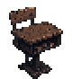
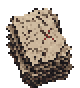
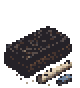

快速逼近，接触造成 4 点后以 128px/s 后撤 0.42 秒，再锁向预警 0.32 秒、以 220px/s 再扑 0.42 秒；再扑半宽 18px，可横移躲开。
怎么应对 · 第一次撞击后还会再扑一次；它后撤时准备横移。


全场最快的小怪之一，追上后沿主角周围 54×34px 椭圆轨道以 1.9rad/s 正反交错游走；进入 44px 后每 1.5 秒造成 3 点，离开重置完整节拍。中年章复用进办公室怪潮。
怎么应对 · 它贴身绕圈才会持续伤害，先拉开再处理。


原地不动、不主动攻击；以 150/96/56px 三档比较场结算，越近伤害越快——外圈每 1.5 秒 1 点，内圈每 0.62 秒 2 点。
怎么应对 · 离得越近伤害越快，保持远距用《一口气》拆掉。


以 46 移速贴身追逐；进入 48px 后用断续下划线缠脚，把主角移速降到 75%，离开即恢复。
怎么应对 · 离开缠脚范围即可恢复速度，先拉开距离。


战场 · 少年 · 千眼教室。悬浮的白色试卷群拼成面具，红叉当眼睛，一道红杠当嘴。
三招都是位置考验：《标准答案》站对判分线、《过程没写》躲开自己 3 秒前的路径、《卷子往后传》从推进排里找唯一缺口。前摇 0.9–1.0 秒，路径印每枚再错开 0.1 秒。
怎么应对 · 找白色安全带、离开自己三秒前的路径、从推进墙的缺口穿过。
设计背景
阶段与基础形态
唯一阶段 · 统一答案


招式 · 3 式
 《标准答案》 · 4 帧前摇 1.0 秒，横刷三条贯场判分带，只有一条白色实底安全带是「对」的，站错挨打。
《标准答案》 · 4 帧前摇 1.0 秒，横刷三条贯场判分带，只有一条白色实底安全带是「对」的，站错挨打。 《过程没写》 · 4 帧读取玩家最近 3 秒的 24 点轨迹、抽样成 12 枚离散红叉；首枚前摇 0.9 秒、后续每枚错开 0.1 秒，沿路按顺序盖印重放伤害。
《过程没写》 · 4 帧读取玩家最近 3 秒的 24 点轨迹、抽样成 12 枚离散红叉；首枚前摇 0.9 秒、后续每枚错开 0.1 秒，沿路按顺序盖印重放伤害。 《卷子往后传》 · 4 帧前摇 0.9 秒，两段半宽 210 的红叉移动墙向前推进，中间固定只留 80px 缺口。
《卷子往后传》 · 4 帧前摇 0.9 秒，两段半宽 210 的红叉移动墙向前推进，中间固定只留 80px 缺口。隐喻字幕
“过程没写。这题只能给结果分。”
“卷子往后传。别折。”
遭遇语音
「过程没写。这题只能给结果分。」
「卷子往后传。别折。」

战场 · 雨里的校门口。雨从固定方向斜着扫过全场，站在雨里减速并持续小伤害；父亲迎雨站住时，背风侧留出一块随他移动的干地——要躲雨，唯一的办法是站到正在打你的人身后。
一阶段雨越大他壳越硬（单次受伤上限 4）；《外面冷》转身迎雨时干地扩大，是输出窗口。半血《雨衣倒下去》转阶段：雨声断一拍，只剩扣子落地和一次吸不上气的哭声，雨衣落地变成场地软掩体（挡泪滴、截断雨圈、让冲撞提前停）。二阶段取消伤害上限、移速提高，每发完一次脾气会装作不经意把雨衣往你这边踢一点，收招蹲下喘气是主要输出窗口。
怎么应对 · 一阶段站在父亲背风侧的干地；二阶段借落地雨衣挡弹，等他发完脾气再输出。
设计背景
阶段与基础形态
一阶段 · 站在雨里的父亲


二阶段 · 雨衣落下


招式 · 6 式
 《进去》 · 4 帧大扇形近战、强击退，像把孩子赶回屋里；击退方向最多向最近干地边缘偏转约二十五度，不把主角直接推进雨幕深处。
《进去》 · 4 帧大扇形近战、强击退，像把孩子赶回屋里；击退方向最多向最近干地边缘偏转约二十五度，不把主角直接推进雨幕深处。 《站好》 · 4 帧抬手指向主角，地面出现一条窄直预警线后重步压过去（长距 210）；命中减速不眩晕。
《站好》 · 4 帧抬手指向主角，地面出现一条窄直预警线后重步压过去（长距 210）；命中减速不眩晕。 《外面冷》 · 4 帧雨幕加重时停止追击，转身迎着固定雨向站住，背风侧干地随之扩大——玩家的输出窗口。这个动作不显示名字，父亲不会回头看主角。
《外面冷》 · 4 帧雨幕加重时停止追击，转身迎着固定雨向站住，背风侧干地随之扩大——玩家的输出窗口。这个动作不显示名字，父亲不会回头看主角。 《不许看》 · 8 帧捂脸两段冲撞，每段之间重新寻找主角方向但转向角受限；撞到落下的雨衣会提前停并摔坐。
《不许看》 · 8 帧捂脸两段冲撞，每段之间重新寻找主角方向但转向角受限；撞到落下的雨衣会提前停并摔坐。 《都怪你》 · 4 帧原地跺脚，三圈由小到大的地面雨圈，前两圈逼走位、第三圈伤害最高；雨圈遇到落下的雨衣缺一个口，形成可读安全角。
《都怪你》 · 4 帧原地跺脚，三圈由小到大的地面雨圈，前两圈逼走位、第三圈伤害最高；雨圈遇到落下的雨衣缺一个口，形成可读安全角。 《我没有哭》 · 4 帧一边擦脸一边乱挥手，扇形泪滴弹道，不追踪，雨衣可挡；收招后蹲下喘气，是主要输出窗口。
《我没有哭》 · 4 帧一边擦脸一边乱挥手，扇形泪滴弹道，不追踪，雨衣可挡；收招后蹲下喘气，是主要输出窗口。隐喻字幕
“雨声先到，父亲后到。”
“他还站着。”
“雨衣倒下去，里面有人哭得喘不上气。”
“他说没有哭，手背却一直在擦脸。”
“雨衣留下了。话还是没说。”
“他说只是顺路，鞋里却倒出一小滩水。”
遭遇语音
「站好。都是为你好。」
「你家里人，还没来吗？」
「请还未离校的同学，尽快到校门口等候。」
「走吧。」
「(sniffs)我没有哭。」
「上课时间到了。请同学们回到座位。」
「最后一排。站起来。」
「他才三十八分。」
「放学后请直接回家，不要在校门口逗留。」
「我昨晚一点才睡。」
「发什么呆？」
「同学，五毛。」
五件固定掉落不进三选一、不可拒绝、拾取即穿戴，而且每一件都在告诉你下一章去哪。终局收灯人逐件剥离时，父亲的雨衣保底最后被剥。

“他没有拥抱过你，但那天雨很大。”
承受并化为雨：每场抵挡首次受伤；受伤释放雨滴；代价：射速-18% · 身体变得沉重。
不进三选一、不可跳过；主角捡起穿上，外形当场改变，并播少年放学雨中的「走吧」

校门口，同学问他「你家里人，还没来吗？」——这句话会在暮年的病房门口被护士一字不差地再问一次。
第 03 章 · 青年
场景 → 6 种普通怪 → 小 Boss → 大 Boss → 沿途语音
打工人。朝九晚五，怕迟到。这一章第一次让玩家花自己的钱去决定别人的命运。
赶车怕迟到 → 门口扫脸打卡 → 帮不帮小张 → 领导一直夸你，活越来越多 → 半血他拍桌子 → 「离职！」／「岗位只有一个！」
齿轮太「工业时代」。现在打卡就是往那块屏前面一站，绿框一闪——《识别中》的脸就是屏上那个空着的识别框。扫中你，屏上跳出你的名字和工号，锁定 3 秒，期间 260px 内的小怪朝你聚拢速度乘 1.65。
他站在公司门口。帮，是 10 块零钱；不帮，什么也不会发生——当场。这个标记会一直存到中年。
所有候选亮出竞争圈，1.2 秒后互相吞并只活一只，长出背刺转向你。帮过小张，活下来的就是小张；没帮过，活下来的是无名任务。同一套判定，两种滋味。

他先踩上这一章的地面，再遇见会从日常里长出来的东西。
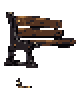
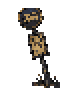
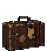

每 4.4 秒锁定一条世界 Y 坐标做横向扫描，0.9 秒预警、0.48 秒生效、半高 13px；命中后锁定 3 秒并让普通怪聚拢速度 ×1.65，不硬控主角。
怎么应对 · 扫描线出现时上下换道，避免被标记后引来怪群。


画外候车 1.8 秒后锁定主角当时的水平车道、左右交替入场，预警 0.62 秒后以 330px/s 横穿 1.36 秒；按 24×22px 车身扫掠一趟至多命中一次（9 点），不追人拐弯，上下离开车道即可躲。与 144px 小 Boss「末班车」共用车形但身份独立。
怎么应对 · 车道亮起后立刻上下离开；车只直穿，不会拐弯追你。


第一次死亡时分裂成两只 6 血子任务并播放 0.55 秒双气泡分裂动作；子任务不再分裂。
怎么应对 · 第一次击败会分裂，提前留出走位空间清两只子任务。


第一次归零不死，播放 0.65 秒旧版本重亮动作并按 60% 血量原地重开；第二次归零才真正消失。
怎么应对 · 第一次归零只是“再开一版”，别把下一轮输出交给别的怪。


自带 8 秒期限，最后 0.7 秒时钟变红催促；期限内未击败便自行消失，并扣走主角 1 枚零钱。
怎么应对 · 优先击杀；八秒内没处理会直接扣走零钱。


不直接攻击；每 4 秒播放 0.56 秒收线动作，把 30–260px 内的普通敌人向自己拉近当前距离的 30%，随后重置 4 秒倒计时。
怎么应对 · 它不打人但会把怪潮拉成团，怪多时优先处理。


走近他弹出选择框（键盘 1／2 或点按，Enter 确认）：花 10 块零钱帮他，或者走开。零钱不够十块时选不了——「零钱不够十块。小张还站在那里。」
这是全游戏唯一一次真花自己的钱去决定别人命运的选择。它不给你任何即时收益提示，也不告诉你后面会发生什么——他不是友军，也不是敌人；他是同期入职的那个人。
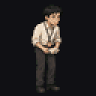
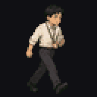
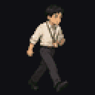
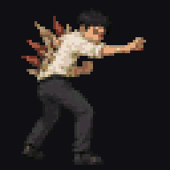
独有机制
跟随你的朝向偏移站位（移速 176，超过 250px 直接贴回来），每 0.92 秒朝 270px 内最近的敌人打一发纸质弹（伤害 4.5、速度 270）——全游戏唯一一个替你开火的单位。
「没事，你先忙。」他继续低头弄那一点没做完的。当场没有任何惩罚，名册里记一条：没有替一起入职的小张垫那十块零钱。
帮过他且他还没背刺过你时，从混战里爬出来的就是他：友军单位当场消失，原地变成一只名为「小张 · 背刺」的敌人。没帮过，活下来的是「无名任务 · 背刺」——同一套判定，只有活下来的那个人不一样。
helpedXiaoZhang / xiaoZhangBetrayed / xiaoZhangDecision 三个标记进存档，断点恢复后仍成立。
后面会怎样
同一个人，先替你开枪，再捅你一刀，最后被装进中年那个纸箱——这三件事都由你在公司门口那 10 块钱决定。中年小 Boss《不知道是谁的纸箱》被击败时，若帮过他 ＋ 被他背刺过两个标记同时成立且尚未持有，保底掉落《没有商标的领带》。
语音
「你先忙，我这边还有点没弄完。」
「今晚又得加班了。」
「小张，你自己看着办。」

战场 · 青年 · 齿轮车站。夜里的城南站台，黄色安全线；侧视的夜班公交进站，锁住一条方向，整辆车从安全线里压过去。
每隔 3 秒锁定主角方向，0.8 秒前摇后以 340px/s 冲刺 1.1 秒；碰撞按半车长 46、半车宽 30 的胶囊结算，一次冲刺最多命中一次、造成 10 点。冲刺后 2.5 秒疲惫窗口，承伤从 ×0.75 提到 ×1.7。45% 概率《晚点》假刹车：前摇走完不发车，顿 0.45 秒后重新蓄一段更短的，一场只出一次。
怎么应对 · 离开锁定车道，等冲刺后的疲惫期追打；假刹车时别急着回位。
设计背景
阶段与基础形态
唯一阶段 · 错过的那一班（末班车）


招式 · 1 式
 《整车冲锋》 · 8 帧锁定车道、0.8 秒黄线前摇后整车压过去；含《晚点》假刹车变招——刹车别急着回位。冲刺后 2.5 秒疲惫、承伤 ×1.7。“跑到的时候，只剩车尾灯了。红的，越来越小。”
《整车冲锋》 · 8 帧锁定车道、0.8 秒黄线前摇后整车压过去；含《晚点》假刹车变招——刹车别急着回位。冲刺后 2.5 秒疲惫、承伤 ×1.7。“跑到的时候，只剩车尾灯了。红的，越来越小。”隐喻字幕
“眼看着走掉的那班。”
遭遇语音
「开往城南方向的末班车已经到站。请乘客有序上车。」
「列车进站。请退到黄色安全线以内。」
「车门即将关闭。请勿冲门。」
「本线路今日运营已经结束。请从出口有序离站。」

战场 · 青年 · 齿轮车站尽头的办公室。场地那头一张桌子，一把背对着你的旧老板椅；椅背皮面上有几道「裂口」。半血后他站起来，占掉大半个屏幕——那几道裂口全都张开了，是嘴。
一阶段不出手：周期生崽（间隔越来越短）、好话附带可无限叠的真加成、靠近就连人带桌后挪并留文件减速区；《画大饼》每 9 秒扔一张金饼，吃到攻速 +8% 并记账。半血拍桌转阶段并清算饼账（每吃过一张饼，4 秒受伤 ×1.15）。二阶段四招互相咬：清怪则《离职！》没威力、《岗位只有一个！》没东西可吞；不清怪输出高但《离职！》能一发带走你；想清怪《优化》跟你抢。没有正确答案，只有你选哪种死法。
怎么应对 · 加成和金饼都有后账；清不清小怪会改变二阶段招式威力，没有无代价答案。
设计背景
阶段与基础形态
一阶段 · 坐在椅背后


二阶段 · 起身


招式 · 9 式
 《我看好你》 · 4 帧每推一波飘一句好话，附带真实生效、可无限叠的加成：「这个只有你能做」伤害+8%／「我看好你」攻速+8%／「辛苦一下」移速+5%。
《我看好你》 · 4 帧每推一波飘一句好话，附带真实生效、可无限叠的加成：「这个只有你能做」伤害+8%／「我看好你」攻速+8%／「辛苦一下」移速+5%。 《这个只有你能做》 · 4 帧生崽：每隔几秒推出一只任务小怪（分裂／复活／倒计时／聚集四种），间隔越来越短，你永远打不完。
《这个只有你能做》 · 4 帧生崽：每隔几秒推出一只任务小怪（分裂／复活／倒计时／聚集四种），间隔越来越短，你永远打不完。 《退桌》 · 4 帧你走近，他连人带桌往后挪，始终隔着；挪过的地方留下一叠文件（8 秒减速区）。
《退桌》 · 4 帧你走近，他连人带桌往后挪，始终隔着；挪过的地方留下一叠文件（8 秒减速区）。 《你怎么看》 · 4 帧「征求你意见」的标记，玩家可以主动踩的坑：走过去站一下，他说「很好，就按你说的办」——加成翻倍，活也翻倍。没人逼你去站那一下。
《你怎么看》 · 4 帧「征求你意见」的标记，玩家可以主动踩的坑：走过去站一下，他说「很好，就按你说的办」——加成翻倍，活也翻倍。没人逼你去站那一下。 《拍桌子》 · 4 帧前摇 0.8 秒抬手一掌拍下，从脚下扩散 230px 圆环冲击波，越近伤害越高；转阶段那一下就是它的第一次。“离职那天他算得很清：你笑过几次，都折成了钱。”
《拍桌子》 · 4 帧前摇 0.8 秒抬手一掌拍下，从脚下扩散 230px 圆环冲击波，越近伤害越高；转阶段那一下就是它的第一次。“离职那天他算得很清：你笑过几次，都折成了钱。” 《这个下班前给我》 · 8 帧甩一叠文件过来，落地散成扇形，基础攻击。
《这个下班前给我》 · 8 帧甩一叠文件过来，落地散成扇形，基础攻击。 《优化》 · 8 帧点状连线点名一只任务小怪，保留 0.9 秒抢杀窗口；前摇结束目标仍活着才被吃掉并回血，被玩家先打掉则显示「优化落空」。
《优化》 · 8 帧点状连线点名一只任务小怪，保留 0.9 秒抢杀窗口；前摇结束目标仍活着才被吃掉并回血，被玩家先打掉则显示「优化落空」。 《离职！》 · 8 帧每件积压任务亮出红色爆炸边界，保留 1.1 秒撤离／清怪窗口；归零后场上积压的活全部同时爆炸，威力＝剩余小怪数。
《离职！》 · 8 帧每件积压任务亮出红色爆炸边界，保留 1.1 秒撤离／清怪窗口；归零后场上积压的活全部同时爆炸，威力＝剩余小怪数。 《岗位只有一个！》 · 8 帧所有候选亮出黄色竞争圈，1.2 秒后互相吞并只活一只，长出背刺转向你；帮过小张则活下来的是小张，否则是无名任务——机制完全一样，只有活下来的那个人不一样。二阶段保底触发一次。
《岗位只有一个！》 · 8 帧所有候选亮出黄色竞争圈，1.2 秒后互相吞并只活一只，长出背刺转向你；帮过小张则活下来的是小张，否则是无名任务——机制完全一样，只有活下来的那个人不一样。二阶段保底触发一次。隐喻字幕
“他把简历推回来的时候，说的是「你很优秀」。”
“饼挂在前面。杆子在他手里。”
“说那些话的从来不是他。是那把椅子。谁坐上去，谁就开始那样说话。”
遭遇语音
「今晚辛苦一下。明早要。」
「最快什么时候可以到岗？」
「押一，付三。水电另算。」
「感谢你的时间。后续结果，我们会再通知。」
「这个只有你能做。」
「我看好你。」
「辛苦一下。」
「很好，就按你说的办。」
「你很优秀。可岗位，只有一个。」
「这份，下班前给我。」
「这个，优化掉。」
「你可以离职了。」
「小张，你自己看着办。」
「散会。」
「你先忙，我这边还有点没弄完。」
「今晚又得加班了。」
「如遇身体不适，请联系站台工作人员。」
「让一让，谢谢。」
五件固定掉落不进三选一、不可拒绝、拾取即穿戴，而且每一件都在告诉你下一章去哪。终局收灯人逐件剥离时，父亲的雨衣保底最后被剥。

“离职金买的最新款手机。爽歪歪。”
新机就是快：伤害+30% · 攻速+10%；代价：拾取时零钱清零 · 每15秒弹一次消息，攻击中断0.4秒。
离职金买的；「爽歪歪」与「零钱清零」印在同一张卡上，也是成年一章所有电话的来源
第 04 章 · 成年
场景 → 5 种普通怪 → 小 Boss → 大 Boss → 沿途语音
透支身体换报酬，养家。最怕电话响。这一章的那句话是「没事」。
电话响 → 必须跑过去接 → 接的时候钉在原地 → 鞋又快了一档
父亲对他说「没什么事，你忙吧」，他对家里说「没事，不忙」。互相瞒着，各自扛着——这一章的敌人里，《没人说话》是沉默本身。
《没关的台灯》教你主动站进伤害里换强度：88px 灯下赶工区，圈内伤害乘 1.2，每秒灼伤 1 点。《热过两遍的那锅》教你必须停下来：8 秒凉透，凉了全场每 2 秒掉 2 点，必须走进 54px 并静止 1 秒才能重热。合起来就是《响个不停》——跑过去，站住，挨着打。
它不是中段登场的精英。开场慢得几乎看不出在动，你每停一次它就快一档——包括接电话被钉住的那 3 秒。到章节后半，已经甩不掉了。
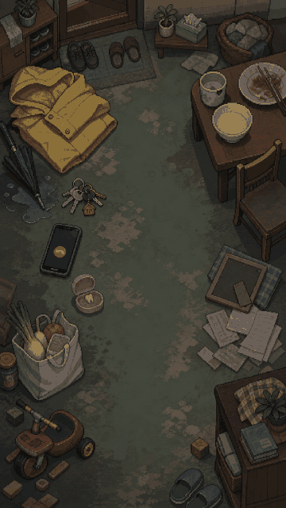
他先踩上这一章的地面，再遇见会从日常里长出来的东西。
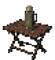
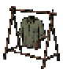
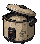
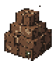

追踪主角；进入 70px 铃声场后按完整 1.2 秒节拍造成 1 点，出圈立即重置，重新入圈不会立刻扣血。
怎么应对 · 离开铃声范围会重置扣血节拍，不要在圈内久留。


皮糙肉厚的催缴单，成队从四面缓慢合围，贴身 7 点接触伤害；没有花招，胜在从不缺席。中年、暮年章持续复用进怪潮。
怎么应对 · 移动慢但贴身很痛，保持距离逐只清掉。


缓慢逼近，贴身 3 点；90px 沉默场内主角移速 ×0.75，离开恢复；多只同场只叠视觉压迫、不重复乘算减速。
怎么应对 · 走出沉默场就能恢复速度，多只同场不会重复叠减速。


原地不动、不移动不攻击；88px 三层光场内主角受到的最终伤害 ×1.2，并每秒累计 1 点灼伤；多盏灯只叠光效、数值不倍乘。
怎么应对 · 不要站在灯圈里换血；能腾出火力时尽早拆掉。


原地一口锅，带 8 秒温度倒计时；凉透后每 2 秒对全场造成 2 点；走进 54px 并站定约 1 秒才能把它重新热满。
怎么应对 · 温度快空时走近并站定一秒重新加热，别让全场伤害启动。


战场 · 成年 · 屋檐下的家。玄关的一双旧皮鞋，踩着你的影子跟在后面；不是中段登场的精英，而是一进成年章就在场上，一直到这一章结束。
开场慢得几乎看不出在动；你每停一次（连续静止满 1.2 秒，含接电话的 3 秒）它就快一档，到章节后半已经甩不掉。沿路留下水渍脚印（《又下雨了》），踩到打滑。能打死但很硬。
怎么应对 · 少原地停留，绕开水脚印，并在它加速前尽快打掉。
设计背景
阶段与基础形态
唯一阶段 · 还没干的那双鞋


招式 · 1 式
 《又跟近了》 · 4 帧停步计费触发的加速动作：每档速度 +4、上限 96，加速时必播独立四帧动画并弹出「又跟近了」。
《又跟近了》 · 4 帧停步计费触发的加速动作：每档速度 +4、上限 96，加速时必播独立四帧动画并弹出「又跟近了」。隐喻字幕
“他想等鞋干了再出门。门外的事没等他。”
“他到家的时候脱下来，天没亮又穿上，鞋一直是潮的。”
遭遇语音
「站好。」
「我也是为你好。」

战场 · 成年 · 屋檐下的家。它就是青年那关用离职金买的那部 iPhone，放大成 Boss 尺寸，屏幕朝你，会自己移动；暗调场景里，亮起的手机屏幕是唯一光源，玩家手里那部手机真的在震。
只有走过去接电话的 3 秒它才可被攻击：接＝定身 3 秒但攻击照常（家人扣血 3，同事／医院扣 7）；挂＝未接 +1 并当场生成一只追你的「未接来电」，每积 5 个未接，来电频率和伤害涨一档。每隔一段时间强制来电，5 秒不处理自动算未接。半血分裂成 3–4 组同时在不同位置响——你只有一双腿；一阶段每挂一通省下的 3 秒，二阶段要一次性还清。
怎么应对 · 接电话才能伤到它；挂断会生成未接来电，拖延只会把压力带进二阶段。
设计背景
阶段与基础形态
一阶段 · 一部电话


二阶段 · 电话分裂


招式 · 6 式
 《响铃（一阶段）》 · 4 帧循环动画：来电落在主角 180–280 距离环上亮屏震动，铃声、光闪与手机震动同拍逐档加急；响铃期间走近 74px 内才能开始接听。
《响铃（一阶段）》 · 4 帧循环动画：来电落在主角 180–280 距离环上亮屏震动，铃声、光闪与手机震动同拍逐档加急；响铃期间走近 74px 内才能开始接听。 《接听（一阶段）》 · 4 帧走到跟前站住 3 秒，定身不能移动但攻击照常——这 3 秒是 Boss 唯一的可攻击窗口；接通时屏幕微暗一圈，不显示通话界面。
《接听（一阶段）》 · 4 帧走到跟前站住 3 秒，定身不能移动但攻击照常——这 3 秒是 Boss 唯一的可攻击窗口；接通时屏幕微暗一圈，不显示通话界面。 《未接（一阶段）》 · 4 帧倒计时结束自动算未接：那块光暗下去，从那个位置站起来一只「未接来电」开始朝你走；未接数 +1，每积 5 个 Boss 强化一档。
《未接（一阶段）》 · 4 帧倒计时结束自动算未接：那块光暗下去，从那个位置站起来一只「未接来电」开始朝你走；未接数 +1，每积 5 个 Boss 强化一档。 《全部一起响（响铃）》 · 4 帧3–4 组电话群同时压进画面，各叠三层震动波与 16 段震动碎片；离得最近的一通用暖金锁定角标标出，接听判定仍只认单个落点的 74px 范围。
《全部一起响（响铃）》 · 4 帧3–4 组电话群同时压进画面，各叠三层震动波与 16 段震动碎片；离得最近的一通用暖金锁定角标标出，接听判定仍只认单个落点的 74px 范围。 《全部一起响（接听）》 · 4 帧开始接听后 12 段局部收束环在原地走完 3 秒；接通时只有选中的一组转金，另外 2–3 组同时转红作废——顾得上一个，顾不上另外三个。
《全部一起响（接听）》 · 4 帧开始接听后 12 段局部收束环在原地走完 3 秒；接通时只有选中的一组转金，另外 2–3 组同时转红作废——顾得上一个，顾不上另外三个。 《全部一起响（未接）》 · 4 帧未选中或全部未接的电话群转红结算，保留 0.72 秒三层扩散波与 20 段爆裂碎片；每部未接各计一次未接惩罚。
《全部一起响（未接）》 · 4 帧未选中或全部未接的电话群转红结算，保留 0.72 秒三层扩散波与 20 段爆裂碎片；每部未接各计一次未接惩罚。隐喻字幕
“他把手机扣在桌上，木头里还是一通一通地震。”
“未接来电 0”
遭遇语音
「我把你那份放冰箱了。明天热一下还能吃。」
「他一直说，不用叫你。」
「你爸，没让我给你打这个电话。」
「您拨打的用户暂时无法接通，请稍后再拨。」
「没什么事。你忙吧。」
「群里@你了。你没看到吧。」
「没事。不忙。」
「饭热过两次了。还等你吗？」
「家属您好，您父亲已经收住院了。麻烦尽快过来办理陪护手续。」
「我也是……为你好。」
「袋子要吗？四毛。」
五件固定掉落不进三选一、不可拒绝、拾取即穿戴，而且每一件都在告诉你下一章去哪。终局收灯人逐件剥离时，父亲的雨衣保底最后被剥。

“名字栏写着他父亲的名字。轮到他填自己的时候，症状栏可以照抄。”
你透支得越多，你越强：每永久损失10点最大生命，伤害+8%（无上限）；代价：治疗效果-40%。
第 05 章 · 中年
场景 → 3 种普通怪 → 小 Boss → 大 Boss → 沿途语音
退休——公司不说裁你，说让你「到年纪了」。调子是冷的、程序化的：没有一个人对他发火，也没有一个人挽留。
体检单比工资单先到 → 门打不开了 → 工位上多了个纸箱 → 没人问它是谁的
副标题是「门已经打不开了」：门禁说「验证失败，请联系管理员」，会议室门后传出「下一页，这个数字再往下拆一下」，而大 Boss 的形象本来就是一扇立着的门。这些料本来就全在，只是从没串起来。
会议室的门拿走你的位置，去年的体检报告拿走你的加成（碰到不掉血，让身上所有加成失效 3 秒），谁的纸箱拿走你的道具，上门催收拿走你的钱。成年那关你用命换来的东西，这一关一样一样被拿回去。
只有青年帮过他、又被他背刺过的玩家，箱子上才挂着那张工牌，才认得出是谁。帮过就认得出，箱子里掉一件他留下的东西；没帮过，就是个普通纸箱，箱子是空的。他赢了岗位，捅了你，最后还是被装进箱子里。
少年、青年、成年连着三个二阶段都有强烈的翻转（雨衣倒下、椅子长满嘴、手机分裂）。《上门催收》没有反转，不变身，不愤怒——它只是一次又一次地敲门。

他先踩上这一章的地面，再遇见会从日常里长出来的东西。
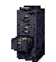
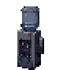
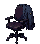
以 40 移速追击，贴身命中造成 4 点，并在主角还有零钱时偷走 1 枚；击杀时落下「工牌落地」。
怎么应对 · 贴身会偷零钱，保持距离优先击杀。

固定原地、不攻击；进入 124px 停步域后主角移速 ×0.68，离开立即恢复。
怎么应对 · 它不会攻击；离开停步范围就能恢复速度。


以 37px 接触域贴身追击；命中不扣血，而是把装备、组合与命运战斗加成全部封存 3 秒，攻击退回基础《一口气》；接触后反推并留 0.9 秒再触发间隔。
怎么应对 · 避免接触，否则全部构筑会被封存三秒。


小 Boss《不知道是谁的纸箱》的身份由青年那次选择决定：只有青年帮过他、又被他背刺过的玩家，箱子上才挂着那张工牌，才认得出是谁。
帮过 → 认得出，箱子掉一件他留下的东西；没帮过 → 就是个普通纸箱，打完就过去了，箱子是空的。
后面会怎样
他赢了岗位，捅了你，最后还是被装进箱子里。不用怪他，不用原谅他，也不用写第三句。你出过钱帮的那个人，你才认得出他的箱子。「没有商标的领带」只在两个标记同时成立且尚未持有时保底掉落。

战场 · 中年 · 没有关灯的办公室。箱子在工位上放了一上午，没有人问它是谁的；纸箱绑在一把旧工椅上，被推着走。
《清点》前摇 0.7 秒开盖，随机点名一件当前生效的道具贴标签，8 秒内不打死它该道具本关失效（背包不删、出关恢复）；及时击杀会确认「保住了」。另有《贴封条》：每 7 秒把一件非第五档道具封 5 秒。预习大 Boss 的「东西会被拿走」。
怎么应对 · 被点名的道具只有八秒保卫时间，看到标签立即集火纸箱。
设计背景
阶段与基础形态
唯一阶段 · 不知道是谁的纸箱（谁的纸箱）


招式 · 1 式
 《清点》 · 4 帧0.7 秒开盖前摇后给你身上一件道具贴标签，8 秒内不打死纸箱，该道具本关失效（出关恢复）；底部状态条持续显示物证名与倒计时。
《清点》 · 4 帧0.7 秒开盖前摇后给你身上一件道具贴标签，8 秒内不打死纸箱，该道具本关失效（出关恢复）；底部状态条持续显示物证名与倒计时。隐喻字幕
“箱子在工位上放了一上午，没有人问它是谁的。”
“他的名字还在工位上。箱子先贴上了别人的字。”
“他赢了岗位，捅了你，最后还是被装进箱子里。”
遭遇语音
「这个箱子，是给谁的？」

战场 · 中年 · 没有关灯的办公室。一扇立着的门，贴满红色催缴单；被打疼了就换个位置重开——门就是这样的东西，哪儿都能开。
《账单》每 7 秒一张，3.5 秒内交 2 零钱或扣 8 生命，倒计时内击败催收人立即取消未结算账单；《利息》让账单每拖一轮、无钱时的代价 +1。《上门》0.85 秒前摇展开 280px 圆域把人拖近 54px 并收走 1 零钱（无钱扣 5 生命）。《换个门》自上次换门后累计承伤达最大生命 14% 就换位置重开。
怎么应对 · 及时交钱或抢在倒计时结束前击败它；离开《上门》的拖拽圆域。
设计背景
阶段与基础形态
唯一阶段 · 上门催收


招式 · 3 式
 《账单》 · 4 帧每 7 秒寄一张，3.5 秒内交 2 零钱或 8 生命；围绕主角显示十二张逐步收紧的票据与两种真实代价，《利息》使拖欠代价逐轮 +1。“他把单子压在抽屉最底下。第二个月，它自己变厚了。”
《账单》 · 4 帧每 7 秒寄一张，3.5 秒内交 2 零钱或 8 生命；围绕主角显示十二张逐步收紧的票据与两种真实代价，《利息》使拖欠代价逐轮 +1。“他把单子压在抽屉最底下。第二个月，它自己变厚了。” 《上门》 · 4 帧前摇 0.85 秒展开 280px 上门圆域，把范围内玩家拖向门口 54px；有零钱先收走 1 枚，否则掉 5 生命。
《上门》 · 4 帧前摇 0.85 秒展开 280px 上门圆域，把范围内玩家拖向门口 54px；有零钱先收走 1 枚，否则掉 5 生命。 《换个门》 · 4 帧自上次换门后累计承受最大生命 14% 的伤害就换位置重开，用六层门影和十四枚地址标签连接旧门与新门，逼你追着跑。
《换个门》 · 4 帧自上次换门后累计承受最大生命 14% 的伤害就换位置重开，用六层门影和十四枚地址标签连接旧门与新门，逼你追着跑。隐喻字幕
“你也到年纪了。”
“门已经打不开了。”
遭遇语音
「您本期账单尚未结清，请留意还款日期。」
「验证失败。请联系管理员。」
「下一页。这个数字再往下拆一下。」
「本次欠款，已经结清。」
「血压有点高。坐十分钟再量一次。」
「工牌放这儿就行。」
「这个季度大家都不容易。」
「他工位那盆花，没人浇了。」
「麻烦让一下，超时了超时了。」
五件固定掉落不进三选一、不可拒绝、拾取即穿戴，而且每一件都在告诉你下一章去哪。终局收灯人逐件剥离时，父亲的雨衣保底最后被剥。

“系上它，他们也许会认真听。”
体面而窒息：伤害+18% · 暴击+18%；代价：最大生命-10。
仅「青年帮助过小张＋岗位战被背刺」两个标记同时成立且尚未持有时保底掉落
“名字还在，门已经打不开了。”
经历越多伤害越高：每件穿戴物使伤害+5%；代价：商城价格+20%。
第 06 章 · 暮年
场景 → 5 种普通怪 → 小 Boss → 沿途语音 → 最后一盏路灯
病房。一件一件还回去。这一章的那句话是「家属还在路上吗？」
他挂号的时候，家属那一栏填了自己的名字 → 叫号屏跳到他的号 → 走过去，不是这一间
少年在校门口，同学问他「你家里人，还没来吗？」；暮年在病房门口，护士问「家属还在路上吗？」一模一样的问题，隔了一辈子。没有人来接他，从头到尾。两条语音一条都不用新录，本来就在库里。
一盏旋转的纸灯笼，灯面是剪影的马在跑，影子投在地上。每转一圈，从影子里走出一批小怪——严格按童年→少年→青年→成年→中年的年龄顺序。他这一辈子遇到的东西，又从头到尾走了一遍。你打得越快，你的一辈子来得越快；但你打得慢，它一样在出。
慢速跟随，每 10 秒提速一档，纯时间，与你做什么无关，不会停。成年那双鞋是「你每停一次它快一档」——你还有得选，别停；暮年的输液架是你没得选。
被叫去签字、被叫去加班、被叫去缴费。到暮年，轮到别人等他了，而没人来。《叫号屏》跳到你的号你就必须走过去——到了才发现不是这一间，它又跳走了。

他先踩上这一章的地面，再遇见会从日常里长出来的东西。
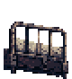
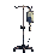
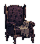
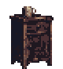

极慢（速度 12）但完全免疫击退的重型怪，贴身 8 点接触伤害；收灯人终局战中也作为「影子」成批出现。
怎么应对 · 击退对它无效，用持续走位慢慢拉开处理。


静止不动、不移动不攻击；站在弹道目标优先级里，替其他怪吸走火力。
怎么应对 · 它会替怪物吸走自动攻击，尽早清掉或把真正威胁引到更近。

固定原地、零接触伤害；每 5.2 秒叫一次 42 号，背离叫号方向时主角移速 ×0.58；走到 48px 内无伤「换门」，屏幕换到远处继续等待。
怎么应对 · 走近屏幕可以无伤换位，别一直背着叫号方向逃。


沿固定方向提着果篮掠过，不看也不攻击；进入 66px 经过域时主角移速 ×0.72，穿过后从场外重开下一次经过。
怎么应对 · 它只沿固定路线经过，侧移离开经过范围即可。


贴身 6 点接触伤害；速度从 14 起步、每存活 10 秒固定 +7；暮年第 8 秒保底刷一只，全章最多同时 2 只，已删除旧精英时期的自疗（由小 Boss 降级为小怪）。
怎么应对 · 存活越久跑得越快，出现后应尽早击杀。


战场 · 暮年 · 白发荒原。一盏旋转的红边纸灯笼悬在场地中央，灯面是剪影的马在跑；灯转起来，影子投在地上，怪只从影子当前扫到的那个方向走出来。
三档转速只改变出怪间隔与每批数量，专用波次始终按五章年龄顺序推进，不因掉血加速而跳章。影子扫到你身上时，你打灯的伤害翻倍——想快点结束怪潮，就得站在正在出怪的那一侧。打灭的瞬间全场召唤物同帧蒸发（约 100 只为性能兜底）；怪潮每 7 只混 1 只半透影子怪（《灯影戏》），命中现形。
怎么应对 · 站到灯影正在出怪的一侧能让伤害翻倍，优先打灯结束怪潮。
设计背景
阶段与基础形态
唯一阶段 · 走马灯


招式 · 2 式
 《转（慢档召唤）》 · 4 帧低转速档：按年龄顺序从影子当前扫过的方向召出前五章小怪，批次小、间隔长；刚扫过的方位最安全。“灯转得越来越快。墙上跑过的每个影子，他都叫得出名字。”
《转（慢档召唤）》 · 4 帧低转速档：按年龄顺序从影子当前扫过的方向召出前五章小怪，批次小、间隔长；刚扫过的方位最安全。“灯转得越来越快。墙上跑过的每个影子，他都叫得出名字。” 《转（快档召唤）》 · 4 帧掉血后转速升档：出怪间隔更短、每批更多——你拖得越久，一辈子来得越快。
《转（快档召唤）》 · 4 帧掉血后转速升档：出怪间隔更短、每批更多——你拖得越久，一辈子来得越快。隐喻字幕
“灯面上的马跑了一整圈，还是那几匹。”
“你以为你打灭了它。你只是把它还回去了。”
暮年没有另一只血条 Boss。走马灯之后，路会直接通向最后一盏灯。
「四十二号，请到三诊室。陪同家属准备好证件。」
「这盒一天三次，饭后吃。和刚才那盒隔开半小时。」
「楼道灯又坏了。我给你留了把椅子。」
「进来坐会儿。灯还亮着。」
「有人把它留在这儿了。」
「拿走可以。留点东西。」
「到点了。」
「该还这一件了。」
「五十六号。五十六号到了没有？」
「这个自费的，要吗？」
「你儿子又打钱来了吧。」
「还不是时候。」
暮年不再给你东西。这一章开始往回收。
第 07 章 · 终局
黑暗收拢 → 终 Boss → 逐件归还 → 最后一口气

这一关不再证明他能打赢什么。收灯人把经历一件件照出来，直到他愿意把这一身放下。

战场 · 暮年 · 白发荒原尽头。黑暗从四周收拢，无限地图第一次有了边；黑暗收到一盏路灯的光圈大小时，收灯人在灯下现身——宽檐旧帽压住面孔，破旧长外套垂到脚边，手里提着刚从走马灯接住的那盏灯，那是场上唯一的光源。
永久不可伤、不显示击杀血条，胜负是归还进度而非血量。常驻《灯下》：灯照不到的地方看不见怪与弹道，要看得见就得靠近他。每 8.5 秒放出追踪光圈（《灯来找你》），6 秒窗口内可甩开但下一轮快 30%；被照满 1.5 秒即《收灯》真实归还一件道具、黑暗收一档并召影子（场上封顶 6 只）。最后一件（雨衣保底）离身后世界冻结 1.4 秒完整播放离身动作，随后《吹灯》清场缩圈；玩家主动确认「放下这一口气」才结局。
怎么应对 · 它不可击杀；靠近灯光看清战场，逐件归还道具，最后主动放下《一口气》。
设计背景
阶段与基础形态
唯一阶段 · 收灯人


招式 · 3 式
 《灯来找你》 · 8 帧报出「收灯 ·《某件》」并从脚下放出追踪玩家的灯光圈（速度 62，每躲过一轮 +30%）；6 秒窗口内甩开＝躲过一轮。“他把灯提高了一点。夜还长。”
《灯来找你》 · 8 帧报出「收灯 ·《某件》」并从脚下放出追踪玩家的灯光圈（速度 62，每躲过一轮 +30%）；6 秒窗口内甩开＝躲过一轮。“他把灯提高了一点。夜还长。” 《收灯》 · 8 帧光圈照满 1.5 秒即真实归还一件道具（从最近获得的往回剥，父亲的雨衣保底最后）、黑暗收一档并召 2 只忘记名字的人。
《收灯》 · 8 帧光圈照满 1.5 秒即真实归还一件道具（从最近获得的往回剥，父亲的雨衣保底最后）、黑暗收一档并召 2 只忘记名字的人。 《吹灯》 · 8 帧最后一件离身后的终局动作：举灯吹灭，残余影子与弹道消失、光圈缩到 70；画面停住，等玩家主动按下红章「放下这一口气」。收灯人永久不可伤，不能靠自动子弹击杀通关。
《吹灯》 · 8 帧最后一件离身后的终局动作：举灯吹灭，残余影子与弹道消失、光圈缩到 70；画面停住，等玩家主动按下红章「放下这一口气」。收灯人永久不可伤，不能靠自动子弹击杀通关。隐喻字幕
“该还这一件了。”
“手里空了，只剩最初那一口气。”
“躲得过一晚，躲不过一世。”
“记得你的人越来越少。”
遭遇语音
「这一件，先还回去。」
「口袋空了。再看看手里。」
「手里空了。这一口气，也可以放下了。」
「家属还在路上吗？」
「他睡着了。」